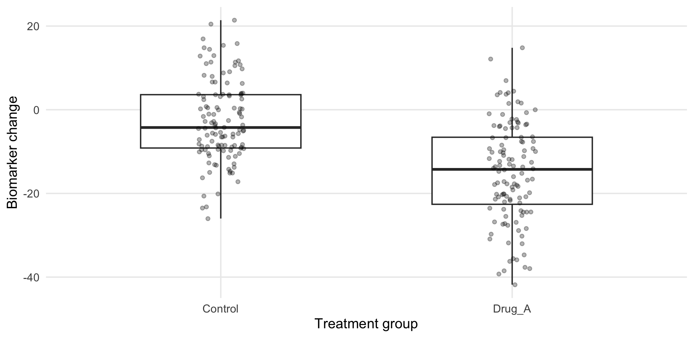
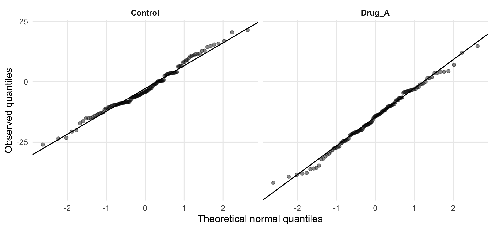

For Control and Drug_A, define biomarker change as
\[ \Delta B=B_{12}-B_0. \]
The target is the difference between the groups in mean biomarker change.
ind_bio <- dat |> filter(treatment_arm %in% c("Control","Drug_A"), !is.na(biomarker_change)) |> droplevels()
ind_sum <- ind_bio |> group_by(treatment_arm) |>
summarise(
n=n(),
mean=mean(biomarker_change), sd=sd(biomarker_change),
median=median(biomarker_change), IQR=IQR(biomarker_change), .groups="drop")
kbl(ind_sum, digits=2, caption="Biomarker change in Control and Drug_A")| treatment_arm | n | mean | sd | median | IQR |
|---|---|---|---|---|---|
| Control | 118 | -2.71 | 9.68 | -4.25 | 12.75 |
| Drug_A | 116 | -14.94 | 11.93 | -14.25 | 16.03 |
The mean and SD summarize the outcome on the scale relevant to mean comparisons. The median and IQR provide additional information about asymmetry and spread.
ggplot(ind_bio, aes(treatment_arm, biomarker_change)) +
geom_boxplot(width=.55, outlier.shape=NA) +
geom_jitter(width=.08, alpha=.30, size=1.3) +
labs(x="Treatment group", y="Biomarker change")
Figure 6.1: Distribution of biomarker change in Control and Drug_A.
The plot shows group location, spread, asymmetry, and individual observations. Large differences in spread are relevant to the pooled Student test, while extreme observations may affect any mean-based analysis.
Normality is assessed separately within each independent group.
ggplot(ind_bio, aes(sample=biomarker_change)) +
stat_qq(alpha=.45) +
stat_qq_line() +
facet_wrap(~treatment_arm) +
labs(x="Theoretical normal quantiles", y="Observed quantiles")
Figure 6.2: Q–Q plots of biomarker change by treatment group.
Approximate alignment with the reference line supports a normal model. Systematic curvature suggests skewness, while marked tail departures may indicate heavy tails or influential observations.
shapiro_bio <- ind_bio |> group_by(treatment_arm) |> group_modify(~{
z <- shapiro.test(.x$biomarker_change)
tibble(W=unname(z$statistic), p_value=z$p.value)
})
kbl(shapiro_bio, digits=3, caption="Shapiro–Wilk tests for biomarker change")| treatment_arm | W | p_value |
|---|---|---|
| Control | 0.986 | 0.256 |
| Drug_A | 0.992 | 0.757 |
The Shapiro–Wilk test evaluates
\[ H_0:\text{the observations are compatible with a normal distribution}. \]
A small Shapiro–Wilk p-value indicates departure from normality, but test choice should not depend on it alone. With a large sample and only mild Q–Q plot deviations, a t-test is usually still appropriate. For independent groups, use Welch’s t-test if variances differ. If non-normality is substantial, especially with strong skewness or influential outliers, consider the Wilcoxon–Mann–Whitney test. For paired data, assess the paired differences and use either a paired t-test or Wilcoxon signed-rank test accordingly.
A median-centered Levene test, often called the Brown–Forsythe test, assesses whether the group spreads differ.
lev_bio <- car::leveneTest(biomarker_change~treatment_arm, data=ind_bio, center=median)
lev_bio
#> Levene's Test for Homogeneity of Variance (center = median)
#> Df F value Pr(>F)
#> group 1 5.52 0.02 *
#> 232
#> ---
#> Signif. codes: 0 '***' 0.001 '**' 0.01 '*' 0.05 '.' 0.1 ' ' 1The null hypothesis is
\[ H_0:\sigma_1^2=\sigma_2^2. \]
Evidence of unequal variances argues against the pooled Student test. Welch’s test does not require equal population variances.
The following block combines the diagnostic results and performs one selected analysis.
normal_ok <- all(shapiro_bio$p_value>=.05)
levene_p <- as.numeric(lev_bio[1,"Pr(>F)"])
equal_var <- levene_p>=.05
if(normal_ok && equal_var){
selected_test <- "Pooled Student t-test"
fit <- t.test(biomarker_change~treatment_arm, data=ind_bio, var.equal=TRUE)
reason <- "Normality acceptable; no evidence of unequal variances."
} else if(normal_ok){
selected_test <- "Welch two-sample t-test"
fit <- t.test(biomarker_change~treatment_arm, data=ind_bio, var.equal=FALSE)
reason <- "Normality acceptable; variances differ."
} else {
selected_test <- "Wilcoxon–Mann–Whitney rank-sum test"
fit <- wilcox.test(biomarker_change~treatment_arm, data=ind_bio, exact=FALSE, conf.int=TRUE)
reason <- "Evidence of departure from normality; rank-based analysis selected."
}
tibble(selected_test, reason) |> kbl(caption="Automated test selection")| selected_test | reason |
|---|---|
| Welch two-sample t-test | Normality acceptable; variances differ. |
| estimate | estimate1 | estimate2 | statistic | p.value | parameter | conf.low | conf.high | method | alternative |
|---|---|---|---|---|---|---|---|---|---|
| 12.23 | -2.712 | -14.94 | 8.6 | 0 | 221 | 9.426 | 15.03 | Welch Two Sample t-test | two.sided |
The operational rule is
| Normality | Variance assessment | Selected analysis |
|---|---|---|
| acceptable | similar | pooled Student t-test |
| acceptable | unequal | Welch t-test |
| substantial departure | either | Wilcoxon–Mann–Whitney test |
This is the general rule, however the threshold \(p=0.05\) should not be interpreted as a universal boundary. Q–Q plots, influential observations, sample size, and the intended estimand remain relevant.
For the pooled Student test,
\[ t= \frac{\bar y_1-\bar y_2} {s_p\sqrt{1/n_1+1/n_2}}, \]
where \(s_p\) is the pooled estimate of the common SD.
Welch’s test instead uses
\[ SE(\bar y_1-\bar y_2) = \sqrt{\frac{s_1^2}{n_1}+\frac{s_2^2}{n_2}}, \]
and estimates the degrees of freedom using the Welch–Satterthwaite approximation.
Both procedures estimate a difference in means. Their distinction concerns how uncertainty is estimated when group variances differ.
The Wilcoxon rank-sum, or Mann–Whitney, procedure replaces the original measurements by their ranks and evaluates the relative ordering of observations from the two groups.
If \(R_1\) is the rank sum for group 1,
\[ U_1=R_1-\frac{n_1(n_1+1)}{2}. \]
It should not automatically be described as a test of equal medians. A simple median or location-shift interpretation requires additional distributional conditions.